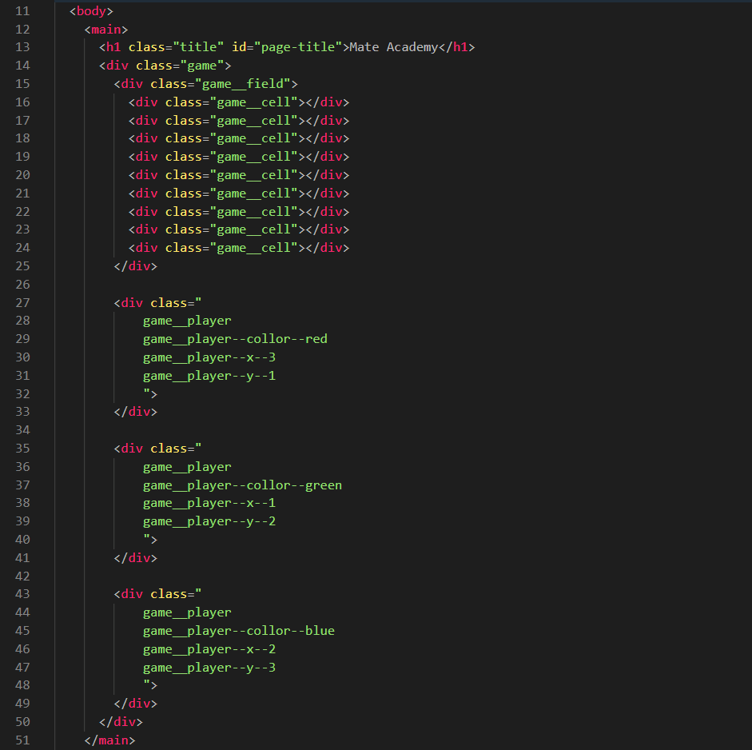
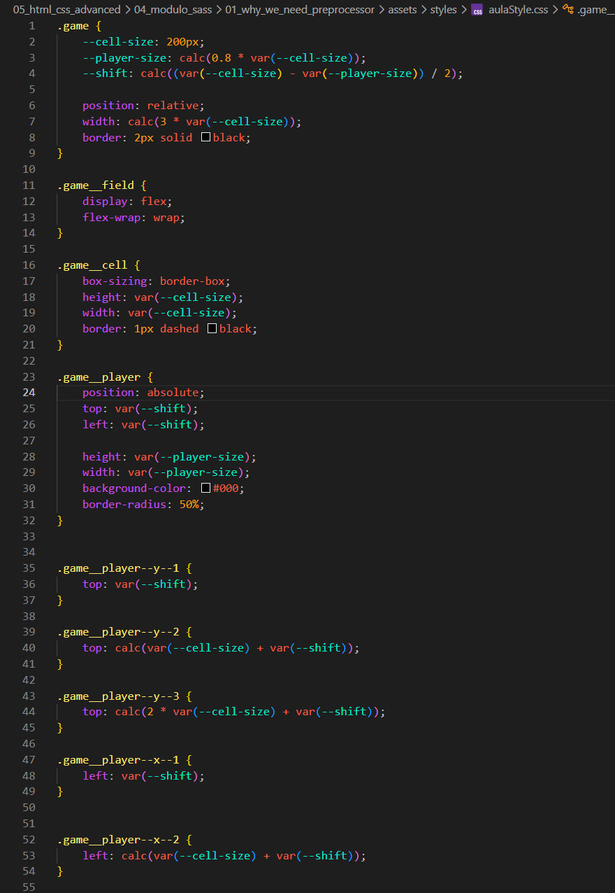
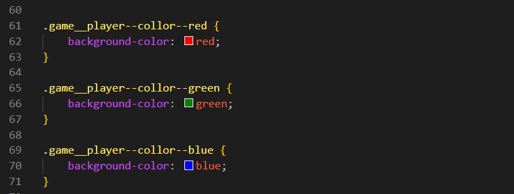

Why We Need Preprocessors
Introdução
Aqui iremos aprender sobre o pré-processador SASS.
Aqui iremos aprender sobre o pré-processador SASS.
HTML:

CSS:

CSS Parte 02:

Podemos observar que, em nosso exemplo, existem diversos cálculos repetidos. Isso não é algo muito positivo para o desenvolvimento, principalmente em projetos maiores, onde a repetição de código pode aumentar a dificuldade de manutenção.
Pré-processadores como o SASS ajudam a tornar o desenvolvimento mais organizado, reutilizável e amigável para o desenvolvedor.
Além disso, eles permitem gerar o CSS final antecipadamente, evitando que certas tarefas sejam repetidas manualmente durante o desenvolvimento.
Conteúdo da Aula